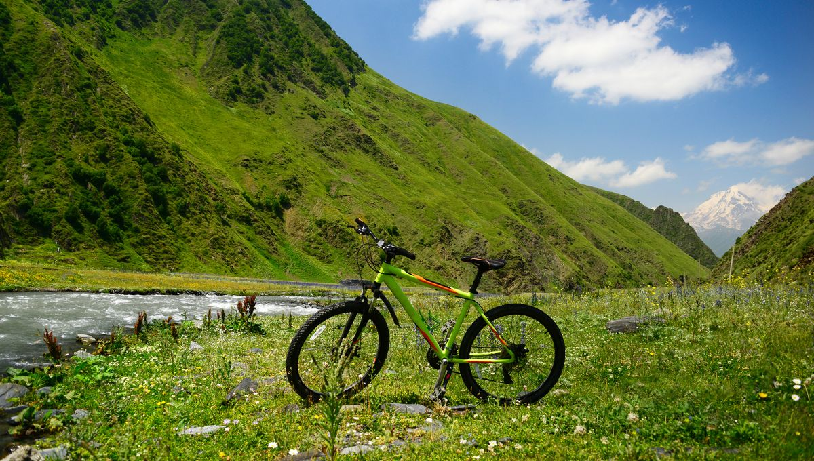

Championnat
piste olympique
Le cyclisme sur piste aux Jeux olympiques a été le théâtre de moments incroyables qui restent gravés dans l'histoire. Découvrez les moments emblématiques du cyclisme sur piste olympique et revivez l'excitation et l'adrénaline de ces compétitions intenses. Que ce soit la victoire spectaculaire d'un athlète, un record du monde battu ou une rivalité légendaire, ces moments ont marqué l'histoire du sport et continuent d'inspirer les générations futures . Ne manquez pas l'occasion de revivre ces instants magiques et de vous plonger dans l'univers passionnant du cyclisme sur piste olympique. Rejoignez-nous dès maintenant et découvrez les moments qui ont fait vibrer le monde entier.
Moments emblématiques du cyclisme sur piste olympique
Revivez les moments les plus mémorables du cyclisme sur piste aux Jeux Olympiques.
Moments emblématiques du cyclisme sur piste olympique
Revivez les moments les plus mémorables du cyclisme sur piste aux Jeux Olympiques.
Moments emblématiques du cyclisme sur piste olympique
Revivez les moments les plus mémorables du cyclisme sur piste aux Jeux Olympiques.
Les Avantage du Cyclisme pour la Sante
Le cyclisme offre une double opportunité : celle de prendre soin de sa santé tout en préservant l'environnement. En pédalant, on renforce son cœur, ses muscles et son esprit, bénéficiant ainsi d'une meilleure condition physique et d'une plus grande sérénité mentale. Parallèlement, le vélo est un moyen de transport écologique, ne produisant aucune émission de gaz à effet de serre et contribuant ainsi à la lutte contre le changement climatique. En optant pour le vélo, on choisit un mode de déplacement qui favorise notre bien-être tout en préservant la santé de la planète, une décision positive à la fois pour soi-même et pour les générations futures.
Condition Physique
Cardiovasculaire : Le cyclisme est excellent pour le cœur. Il augmente le rythme cardiaque, améliore la circulation sanguine et renforce le muscle cardiaque, réduisant ainsi le risque de maladies cardiovasculaires.
Renforcement musculaire : Pédaler renforce les muscles des jambes, des fesses et du bas du dos..
Environnement
Réduction des embouteillages : Les cyclistes ne contribuent pas aux embouteillages, ce qui peut aider à désengorger les routes et à améliorer la circulation pour tous les usagers de la route.
Meilleure qualité de l'air : Moins de voitures sur les routes signifie moins de pollution atmosphérique
Bellaghma Imene
Bennabi Ghiles Rayane